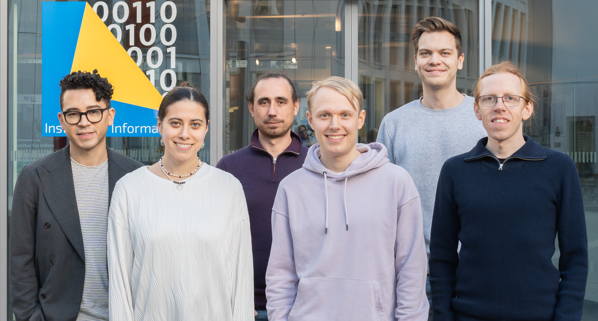

Active Members#

Photo by Max WaidhasPost-Docs and PhD candidates#
Ramsés J. Sánchez
 Photo by Max Waidhas
Photo by Max Waidhas
Ramsés J. Sánchez is a theoretical physicist and applied statistician at the Lamarr Institute, where he leads the Deep Learning for Scientific Discovery (DL4SD) group and also serves as a postdoctoral researcher and scientific coordinator. He wrote his PhD dissertation on anomalous transport and out-of-equilibrium dynamics and received his doctoral degree from the University of Bonn. His research focuses on foundation models for zero-shot inference of stochastic processes and on phenomenological models for formal and commonsense reasoning with large language models.
David Berghaus
David Berghaus is a postdoctoral fellow at the Lamarr Institute. He wrote his PhD thesis on the numerical computation of modular forms on noncongruence subgroups. His current research focuses on natural language processing and machine learning for science in both academic and industrial contexts. For additional information, please visit: https://david-berghaus.github.io/
Kostadin Cvejoski
Kostadin Cvejoski is a Machine Learning Researcher at JetBrains. He completed both his master’s and PhD at the University of Bonn. His doctoral research focused on addressing temporal distribution shifts in large language models, by incorporating temporal information. Currently, his research interests include: Representation learning for reasoning within foundation language models; Development of foundational models for time series data; Integrating temporal context into large language models; and Applications of machine learning and deep learning in human brain interaction.
Patrick Seifner
 Photo by Max Waidhas
Photo by Max Waidhas
Patrick Seifner studied economics and mathematics at the University of Bonn, focusing, respectively, on game theory and abstract algebra. His master’s thesis investigates some cellular structures of Hecke algebras and their connection to its representation theory. Since 2021, he works as a PhD student in machine learning (ML) at the University of Bonn, and member of the Hybrid ML group of the Lamarr institute. In his research, he explores deep learning methods for the inference of continuous-time stochastic processes from (potentially noisy) data.
Students#
Manuel Hinz
 Photo by Max Waidhas
Photo by Max Waidhas
Manuel Hinz is a Master’s student in Mathematics at the University of Bonn, specializing in probability theory and statistics. He earned his Bachelor’s degree in Mathematics at the same institution, focusing on analysis and numerics. His research interests include high-dimensional stochastic processes, particularly their connections to statistics and machine learning. He is particularly interested in problems related to model fitting and sampling.
He is leading the development of the group website, especially the tutorials, working on his masterthesis about the inference of aggregated Markov processes in the patch clamp view of ion channel gating, as well as helping out in other projects.
You can find his website here.
Lea Busse
Photo by Max Waidhas
Lea Busse is currently pursuing a Bachelor’s degree in Physics at Ruhr University Bochum. She has a keen interest in particle physics and the application of neural networks. Her passion lies in interdisciplinary research at the intersection of physics and computer science, where she aims to leverage computational techniques to advance the frontiers of physics.